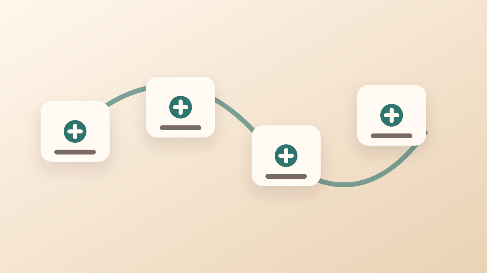

AI agent 放進旅宿現場，最容易被想像成「更會聊天的客服」。它可以回覆旅客問題、整理附近景點、提醒入住時間，聽起來很像一個不會睡覺的線上櫃台。
但真正有價值的 AI agent，不只是把話說得更自然，而是能把一句旅客訊息變成系統可以執行的任務。旅客說：「我會晚到，能不能先幫我開通房間？」背後其實牽涉訂單、身份、付款、房況、門禁權限、自助發卡、現場通知與風險控管。
AI agent 不是另一個聊天框，而是任務入口
傳統客服流程裡，旅客提出需求後，櫃台人員要自己切換系統：先查 PMS 訂單，再確認房號與入住日期，接著看付款狀態、房務狀態、門禁權限，最後再回覆旅客。每一步都不難，但加在一起就很消耗時間。
AI agent 的角色，是把這些步驟整理成可追蹤的任務鏈。它先理解旅客意圖，再判斷需要查哪些資料、要不要建立備註、是否能自動執行，或必須交給真人確認。
這也是為什麼 AI agent 接 PMS 會是旅館科技的下一個重點。PMS 是旅宿營運的核心資料庫；如果 AI 只會聊天、卻看不到訂單與房態，它就很難真的幫現場減壓。
PMS API 是 AI agent 的第一條資料線

PMS 裡通常保存訂單、住客資料、入住與退房日期、房型、房號、付款狀態、房務狀態與備註。AI agent 要進入旅宿營運流程，第一件事不是「回覆得更像人」，而是能透過 API 安全地讀取與更新這些資料。
例如旅客表示會晚到，AI agent 不能只回答「好的，已為您備註」。它應該先確認訂單是否存在、入住日期是否正確、是否已付款或完成授權、房間是否可入住，再決定後續任務。
這裡的重點是權限邊界。AI agent 不應該直接擁有所有操作權限，而是依照規則執行有限任務：可以查詢、可以建立備註、可以送出發卡請求，但涉及改房、退款、取消訂單或高風險操作時，仍要交給人確認。
任務要落到現場：發卡、門禁與邊緣運算

AI agent 接到 PMS 之後，下一步是讓任務真的能在現場作動。這也是 Cellbedell 架構的重點：邊緣運算硬體、發卡機與門禁設備都是隨插即用；PMS 透過 API 把訂單、房號、入住時間與旅客狀態送進來，現場設備就能依照權限直接發卡、產生通行憑證，或完成進門判斷。
換句話說，AI agent 不是自己去「開門」。它應該把旅客需求轉成明確任務，再交給現場設備依規則執行。例如建立晚到備註、確認房號、產生臨時通行憑證、啟用房卡、通知櫃台或房務。
這樣的好處是，旅宿不用把所有風險都放在雲端。透過邊緣運算，關鍵的發卡與進門判斷可以在本地完成；短時間斷網時，已授權的入住流程仍能繼續，雲端則負責同步、紀錄與管理。
一個旅客訊息，可以拆成 6 個任務

以「我會晚到，能不能先幫我開通房間？」這句話來看，一個成熟的 AI agent 不應該只回覆一句「沒問題」。它可以先拆成幾個任務：
- 查詢訂單：確認旅客姓名、訂單號、入住日期與房型。
- 檢查狀態：確認付款、押金、身份資料與房務狀態是否完成。
- 建立備註：把晚到資訊寫回 PMS 或旅客紀錄。
- 發出權限請求：依照規則建立房卡、QR Code、手機憑證或門禁權限。
- 通知現場：把例外情境交給櫃台、房務或夜班人員。
- 留下紀錄：保存誰在什麼時間啟用什麼權限，並設定退房後自動失效。
當這些任務被整理清楚，AI agent 才不只是「會回覆」，而是可以協助旅宿把前台、房務、門禁和客服接成一條線。
最重要的是，不要讓 AI 直接變成最高權限管理員
AI agent 越能做事，越需要清楚的權限設計。旅宿現場牽涉金流、身份、通行與安全，不能讓 AI 因為一句自然語言就直接改房、退款或開放高風險區域。
比較安全的做法，是把任務分級。低風險任務可以自動完成，例如查詢入住時間、建立備註、提醒旅客準備證件；中風險任務需要規則檢查，例如產生房卡或開通門禁；高風險任務則需要真人確認，例如改房、退款、延長住宿或開啟後場權限。
真正好的 AI agent，不是取代所有人，而是讓人只出現在真正需要判斷的地方。它把重複查詢、資料整理和標準任務先處理好，讓櫃台可以把時間留給例外狀況與服務溫度。
導入 AI agent 前，旅宿要先準備什麼？

在討論 AI agent 之前，旅宿可以先檢查四件事：PMS 是否能串 API、入住流程是否已經標準化、發卡與門禁設備是否能接收外部任務、現場是否有斷網備援。
如果這四件事還沒有整理好，AI agent 很容易變成另一個漂亮的客服入口；它回答得很快，但現場仍然要人工補洞。反過來，如果 PMS、API、邊緣運算硬體與門禁流程已經接好，AI agent 就能把旅客的一句話，變成真正能執行的服務。
這也是智慧旅宿接下來最值得看的地方：不是誰做出最像人的 AI，而是誰能把 AI 放進現場流程，讓入住、發卡、通行與服務交接變得更輕。